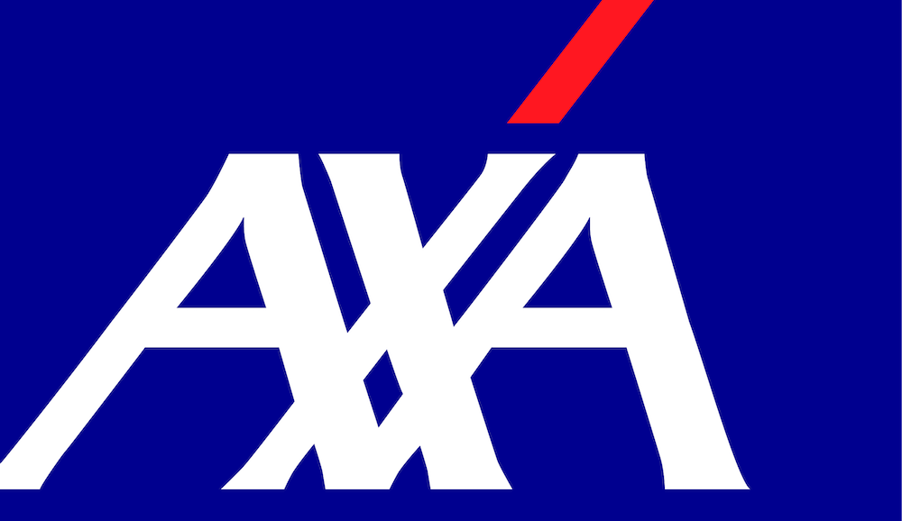
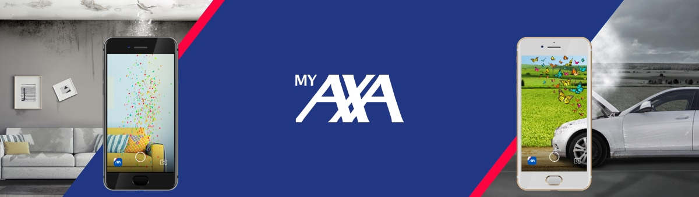

It was hard at the begining moving from Valencia to Barcelona to improve my skills as developer, but it was definetly worth it. I've never worked in Scrum or following any agile framework, but it was love at the first sight. I've started working in the I+D department making libraries in common for all the applications developed by the team. After that I moved to AXA Home, I've found here a great team, maybe one of the best I've found on my career, we developed an app based on IoT and security, we made a design sprint with all the actors in the application to reinvent the application but finally the app was without founds so I've moved to MyAxa
MyAxa App at that moment was the crown jewel, I've started to work with a multidisciplinar environment with four developers in android, four in ios, and another team for the middleware and the backend. We had three QA, one architect, two Product managers, one scrum master, and all worked like a charm, all the team was involved in the product and aware that the application was released in more than ten countries so, the relevance of the quality and performance was critical.

In the meanwhile, I was sharing all I've learned in myAxa with the other android teams. Part of this job allowed me to lead the android quality transformation. I've started replacing my team lead because of a leave, and when he came back he let me continue with the job, caring about the testing, continuos integration and the quality requirements in AXA
Another thing to remark is the work with the quality team. I've never thought I will need it to create an app, and now I think is a must to create a good application. Working near my co-workers in quality taught me the relevance of BDD and how it should work, it is very simple but very hard to acomplish, because it needs of communication, something that sometimes is complicated
